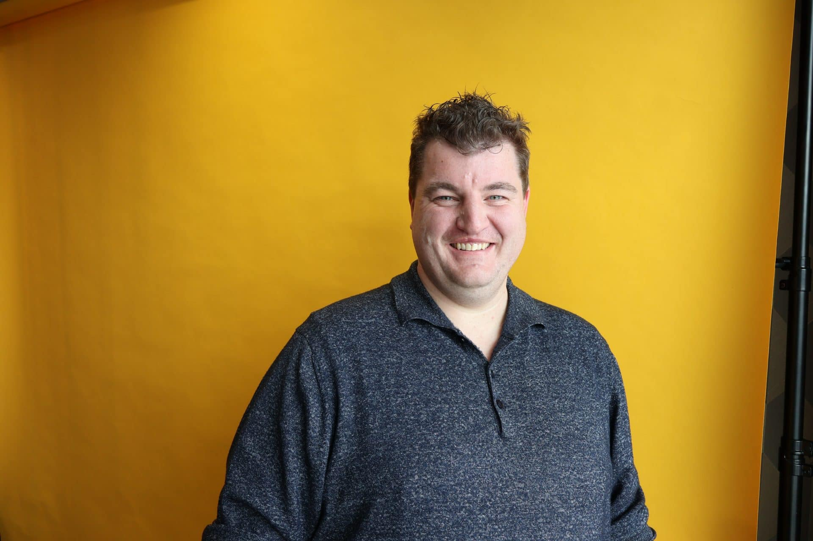

Teamlid
Diederick de Rooij
Hoi, ik ben Diederick en ik werk sinds november 2023 bij DIS als Functioneel Beheerder. In mijn werk ben ik dagelijks bezig met het ondersteunen van klanten, het oplossen van vraagstukken en het zorgen dat gebruikers optimaal kunnen werken met hun systemen. Juist die afwisseling maakt mijn werk zo leuk.
Het ene moment maak ik een nieuwe gebruiker aan, het volgende moment ben ik een complex probleem aan het oplossen. Daarnaast ben ik regelmatig bij klanten op locatie te vinden. Het directe contact met klanten vind ik leuk, geen dag is hetzelfde en elke situatie vraagt weer om een andere aanpak.
Problemen lossen we samen op
Voordat ik bij DIS kwam werken ervaarde ik veel stress. Wat mij direct opviel toen ik hier begon, was de manier waarop collega’s met elkaar omgaan. Hier wordt bijvoorbeeld niet met vingers gewezen als er iets misgaat. We lossen problemen samen op, leren van fouten en helpen elkaar vooruit. Dat teamgevoel is voor mij ontzettend belangrijk.
De sfeer binnen DIS kan ik het beste beschrijven als gemoedelijk en toegankelijk. We werken hard en zetten samen de schouders eronder om het werk gedaan te krijgen, maar er is altijd ruimte voor een grapje tussendoor. Een potje tafelvoetbal op zijn tijd of biljarten hoort daar natuurlijk ook bij.
Vertrouwen in elkaar
Wat ik misschien nog wel het meest waardeer, is de band met mijn collega’s. We hebben het niet alleen over het werk, maar delen ook persoonlijke verhalen met elkaar. Er is onderling vertrouwen en je merkt dat collega’s echt naar elkaar omkijken. Dat maakt het een fijne plek om iedere dag naartoe te gaan.
Ook buiten het werk worden er vaak leuke activiteiten georganiseerd. Van teamuitjes tot het jaarlijkse Sinterklaasfeest voor onze kinderen en een dag naar de Efteling waarbij de partners en kinderen ook mee mogen. Je leert elkaar op een andere manier kennen en je bouwt echt een band op met elkaar.
Voor mij is DIS een bedrijf waar professionaliteit en plezier hand in hand gaan. We werken samen, helpen elkaar en vieren successen met elkaar. Dat maakt dat ik hier echt op mijn plek zit en met plezier naar mijn werk ga.
Neem contact op
